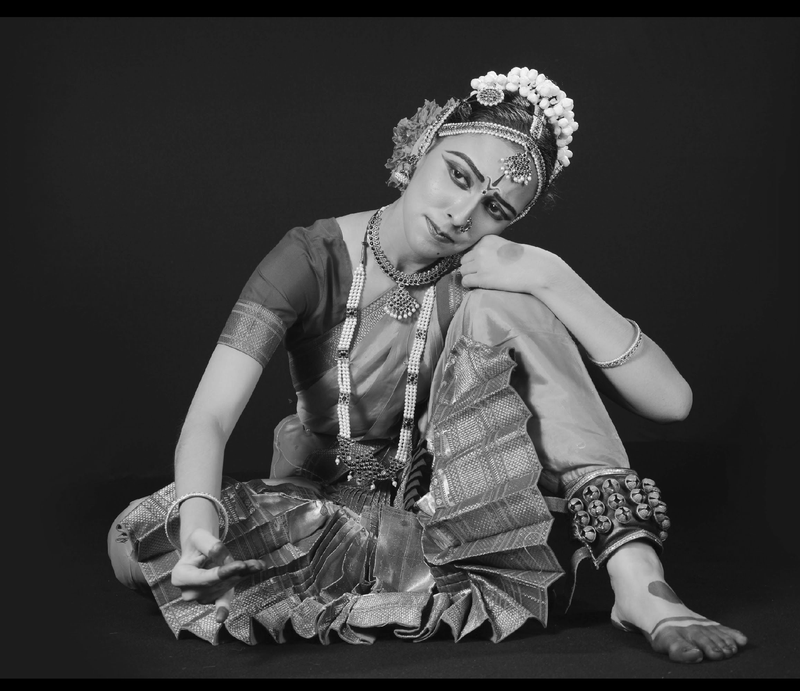
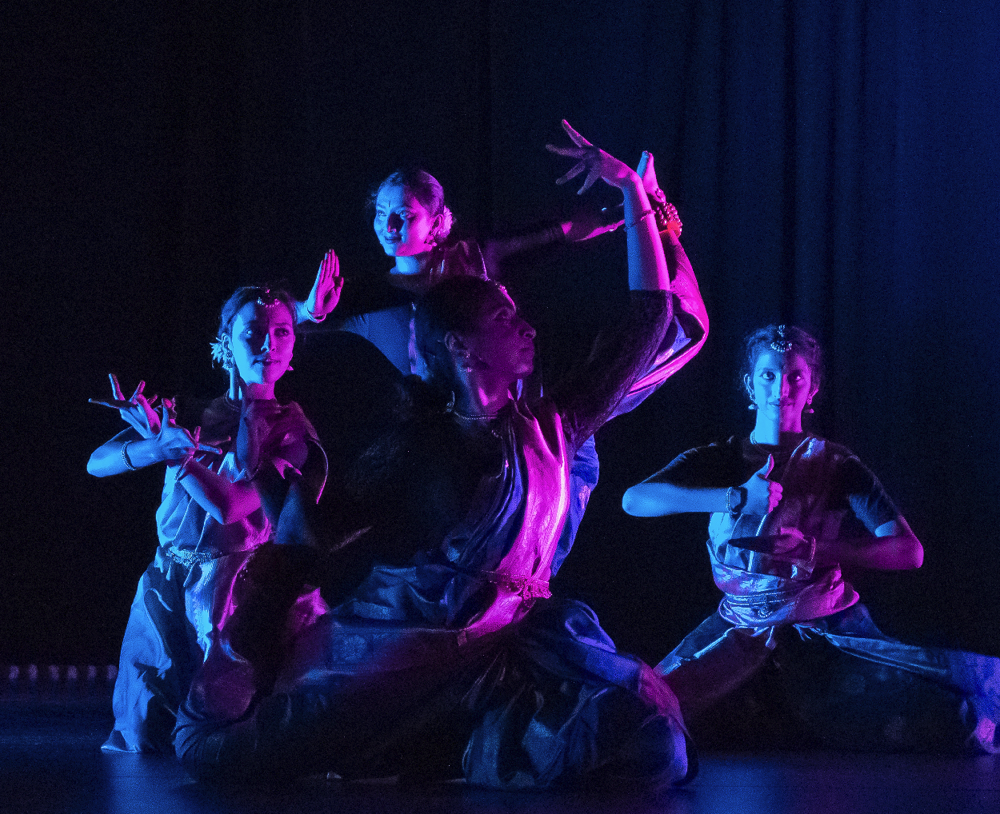

Rujul Gandhi
Activities

Performing Art
- Indian Classical Dance
I learned formally before college and currently keep that alive with MIT Nritya, a club I founded sophomore year to support Indian Classical dance at MIT. Most of Nritya's work so far is online.
- Theater
- Fire spinning
I've been involved on-and-off with MIT's Spinning Arts Club. Artful object manipulation meets plentiful goofing around.
Significant On-Campus Affiliations
- MIT Rowing - Lightweight Women
Fall 2021-Spring 2023
- pika (co-operative living community)
Fall 2021-Spring 2023

Teaching/tutoring
- Teaching middle schoolers about AI with Inspirit AI.
I've taught in the past for Inspirit's general middle school course, AI Pioneers, as well as specialized programs hosted by the Hun School of Princeton and (currently) Valley School of Ligonier.
- Volunteer ESL & Citizenship Tutoring with ITEC, an MIT student-run program
Recent Past
- The MIT Educational Studies Program - they organize Splash!
- Jury & Board of the Asia Pacific Linguistics Olympiad